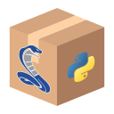

Getting started#
DataLab is an open platform for signal and image processing, designed to be used by scientists, engineers, and researchers in academia and industry, while offering the reliability of industrial-grade software. It is a versatile software that can be used for a wide range of applications, from simple data analysis to complex signal processing and image analysis tasks.
DataLab integrates seemlessly into your workflow thanks to three main operating modes:
|
Stand-alone application, with a graphical user interface that allows you to interact with your data and visualize the results of your analysis in real time. |
 |
Python library, allowing you to integrate DataLab functions (or graphical user interfaces) into your own Python scripts and programs or Jupyter notebooks. |
|
Remotely controlled from your own software, or from an IDE (e.g., Spyder) or a Jupyter notebook, using the DataLab API. |


DataLab leverages the power of Python and its scientific ecosystem, through the use of the following libraries:
NumPy for numerical computing (arrays, linear algebra, etc.)
SciPy for scientific computing (interpolation, special functions, etc.)
scikit-image and OpenCV for image processing
PyWavelets for wavelet transform
PlotPyStack for Qt-based interactive data visualization
How to install DataLab on your computer
Use cases and key strengths of DataLab
Feature matrix of DataLab
Tutorials to learn how to use DataLab